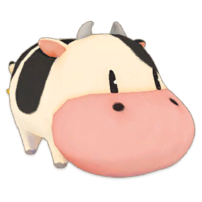
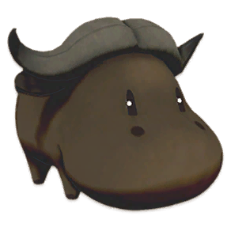
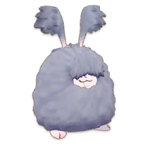
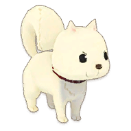
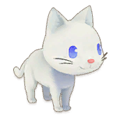
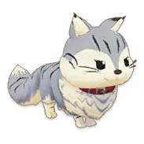
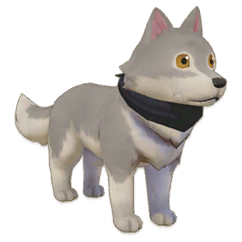

Bridget


Bridget es la hija de Patricia y hermana de Damon y aunque se preocupa por el futuro de su hermano Damon, Bridget siempre mantiene una sonrisa en su rostro y un amigo animal cerca. Trabaja junto con su madre en La tienda de animales de la casa de los cascos.
| Cumpleaños | 3 de Otoño | |
|---|---|---|
| Familia |
|
|
| Horario como soltera | ||
| Lunes y Miercoles | Bridget estara todo el dia en la Tienda de animales. | |
| Martes | Bridget empesara su dia en la Tienda de animales desde las 6:30 hasta las 7:45, luego se ira al Bosque llegando a las 8:30 y quedandose hay hasta las 9:00, luego se ira al Plaza llegando a la 10:30, luego se ira al Tienda de animales llegando a la 12:45 y quedandose hay hasta las 14:15, luego se ira al Bosque llegando a las 15:00 y quedandose hay hasta las 17:30 y finalmente se quedara en la Tienda de animales llegando a las 18:30 y quedandose por el resto del dia. | |
| Martes (Lluvia, Tormenta, Ventisca) | Bridget estara todo el dia en la Tienda de animales. | |
| Horario como casada | ||
| Lunes y Miercoles | Bridget iniciara el dia en tu Granja desde las 6:00 y quedandose hay hasta las 7:00, luego se ira Tienda de animales llegando a las 8:00 y quedandose hay hasta las 18:00 y finalmente se quedara en tu Granja llegando a las 19:00 y quedandose por el resto del dia. | |
| Martes | Bridget iniciara el dia en tu Granja desde las 6:00 hasta las 7:00, luego se ira al Bosque llegando a las 8:30 y quedandose hay hasta las 11:00 y finalmente se quedara en tu Granja llegando a las 12:45 y quedandose por el resto del dia. | |
| Martes (Lluvia, Tormenta, Ventisca) | Bridget estara todo el dia en tu Granja. | |
Preferencias de regalo
La mejor forma de mejorar la amistad y el afecto es siempre regalar las cosas que le gusta una vez por dia.
| Fasina |
 Melocotón dorado  Medallón enjoyado  Nocturno de luz de luna |
|---|---|
| Encanta |
 Tarta Selva Negra  Vals de las llamas  Miel en panal  Concierto de la tierra  Esmeralda  Pulsera a la moda  Fruit au lait  Tarta de fruta  Tela de pelo de conejo gris  Miel  Anillo enjoyado  Té con leche  Sopa de cebolla  Melocotón  Mermelada de melocotón  Petunia  Tela de pelo de conejo rosa  Tela de pelo de conejo  Ramo arcoíris  Risi e bisi  Jalea real  Reloj brillante  Marcha de primavera  Té  Rondó flores de invierno  Jalea de abeja obrera |
| Gusta |
 Pelota para mascota  Golosina para mascota  Perfume de ramo  Colonia encantadora  Perfume floral  Pelo de conejo gris  Perfume frutal  Pelo de conejo gris +  Ovillo de pelo de conejo gris  Pelo de conejo rosa  Pelo de conejo rosa +  Ovillo de pelo de conejo rosa  Pelo de conejo  Pelo de conejo +  Ovillo de pelo de conejo |
Eventos del personaje
Cada evento que ocurra el jugador podra conecer mas sobre el personaje, algunos eventos son partes de la historia del juego y otras son eventos extras que puedes hacer.
Charla de té
| Ubicacion | Hora | Clima | Requisito | Extra |
|---|---|---|---|---|
| La tienda de animales de la casa de los cascos | 03:00 am - 04:59 pm. |
|
|
- |
Entregado con amor
| Ubicacion | Hora | Clima | Requisito | Extra |
|---|---|---|---|---|
| Muelle. | 08:00 am - 05:59 pm. |
|
|
- |
Todo está en el vendaje
| Ubicacion | Hora | Clima | Requisito | Extra |
|---|---|---|---|---|
| Restaurante "Capeside Bistro" | 7:00 pm - 10:59 pm. |
|
|
- |
La oveja fugitiva
Las deciciones que tomes en este evento no influra en con la relacio de este personaje, lo unico que cambia es el dialogo.
| Ubicacion | Hora | Clima | Requisito | Extra |
|---|---|---|---|---|
| Pueblo Oliva | 8:00 am - 5:59 pm. |
|
|
- |
Evento tutorial sobre correa
| Ubicacion | Hora | Clima | Requisito | Extra |
|---|---|---|---|---|
| Tienda de mascotas | 7:00 pm - 10:59 pm. |
|
|
|
La tienda de animales de la casa de los cascos

La tienda de animales de la casa de los cascos está dirigida por Patricia y su hija Bridget. Es la tienda de animales local de Olive Town. La tienda venderá kits de cría para sus animales de granja a 3000G una vez que su habilidad de cuidado de animales alcance el nivel 5 o superior. En esta tienda podras comprar animales para tu granja y tambien comprar mascotas y monturas.
Animales
En esta tienda podras comprar animales para tu granja pero antes de eso debes completar siertos requisitos para que esten a la venta.
| Animal | Tipo de subproducto | Precio | Requisito de ventas |
|---|---|---|---|
 Gallina |
 Huevo  Huevo + |
2.000 G | Domesticandolo en estado salvaje. |
 Gallina sedoso |
 Huevo de seda  Huevo de seda + |
4.000 G | Domesticandolo en estado salvaje. |
|  Vaca |
 Leche  Leche + |
3.000 G | Domesticandolo en estado salvaje. |
 Vaca marrón |
Leche Leche + |
5.000 G | Domesticandolo en estado salvaje. |
 Vaca negra |
Leche Leche + |
10.000 G | Despues de llegar al nivel 5 en la habilidad de Cuidado de animales. |
|  Búfala |
 Leche de búfala  Leche de búfala + |
6.000 G | Domesticandolo en estado salvaje. |
 Cabra |
 Leche  Leche de cabra + |
4.000 G | Domesticandolo en estado salvaje. |
 Cabra alpina |
Leche Leche de cabra + |
6.000 G | Domesticandolo en estado salvaje. |
 Oveja |
 Lana de oveja  Lana de oveja + |
3.000 G | Domesticandolo en estado salvaje. |
 Oveja de Suffolk |
 Lana de oveja suffolk  Lana de oveja suffolk + |
6.000 G | Domesticandolo en estado salvaje. |
 Alpaca |
 Lana de alpaca  Lana de alpaca + |
4.000 G | Domesticandolo en estado salvaje. |
 Alpaca marrón |
 Lana de alpaca marrón  Lana de alpaca marrón + |
8.000 G | Domesticandolo en estado salvaje. |
 Conejo |
Pelo de conejo Pelo de conejo + |
2.000 G | Domesticandolo en estado salvaje. |
 Conejo rosa |
Pelo de conejo rosa Pelo de conejo rosa + |
30.000 G | Despues de llegar al nivel 5 en la habilidad de Cuidado de animales.. |
|  Conejo gris |
Pelo de conejo gris Pelo de conejo gris + |
30.000 G | Domesticandolo en estado salvaje. |
Mascotas
La mayoría de las mascotas se desbloquearán una vez que hayas actualizado tu casa a una cabaña de troncos y hayas presenciado el evento de presentación de mascotas de Patricia. La excepción a esto es el Pequeño Lobo, que también requerirá una bendición del Santuario. Las personalidades cambian a diario, ¡así que asegúrate de revisarlas de vez en cuando para encontrar la mascota que deseas!.
| Animal | Precio | Requisito de ventas |
|---|---|---|
 Shiba Inu  Shiba Inu negro 
Shiba Inu blanco  Pomeranio |
2.000 G | Su hogar ha sido actualizado a una cabaña de troncos. |
 Labrador retriever  Boyero de Berna  Husky siberiano  Collie fronterizo |
3.000 G | Su hogar ha sido actualizado a una cabaña de troncos. |
 Rayas marrones  Negra 
Blanca  Americano  Doblez escocés  Calicó |
2.000 G | Su hogar ha sido actualizado a una cabaña de troncos. |
 Persa 
Maine-coon |
3.000 G | Su hogar ha sido actualizado a una cabaña de troncos. |
 Pequeño lobo |
50.000 G | Su hogar ha sido actualizado a una cabaña de troncos y recibiendo la bendición del Santuario. |
Montura
| Animal | Precio | Requisito de ventas |
|---|---|---|
 Caballo marrón |
5.000 G | Domesticandolo en estado salvaje. |
 Caballo rojo |
10.000 G | Domesticandolo en estado salvaje. |
 Caballo blanco |
10.000 G | Domesticandolo en estado salvaje. |
 Caballo negro |
10.000 G | Domesticandolo en estado salvaje. |
 Precioso caballo |
50.000 G | obtenido a travez de la bendición del Santuario |
 Unicornio |
100.000 G | obtenido a travez de la bendición del Santuario |
|  Lobo |
100.000 G | obtenido a travez de la bendición del Santuario |